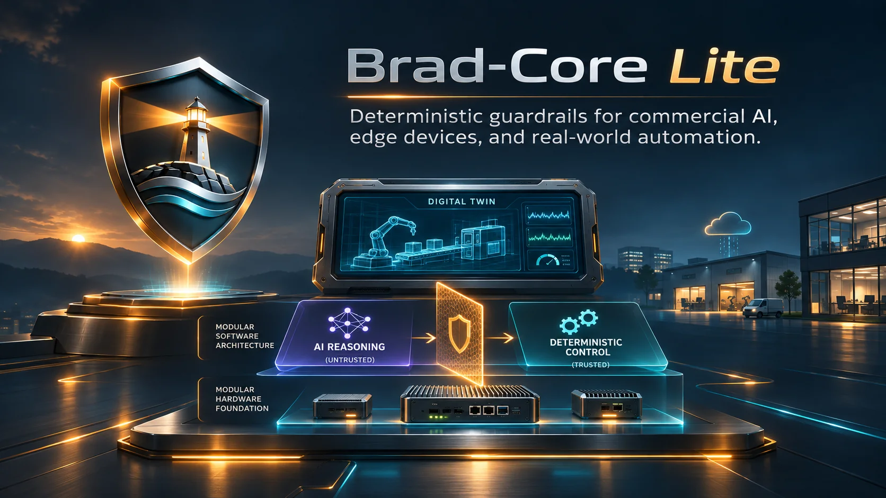

Agent permission boundary
AI proposes actions against rules that it cannot independently amend.

Let AI do more work without letting it give itself more power.
Let AI do more work without letting it give itself more power.
Elastic P-Core is a proposed way to add, remove, or replace AI workers while a separate Brad-Core system keeps their permission limits fixed. It is a design concept, not an implemented feature.
Candidate concept; Elastic P-Core has not yet been implemented.
AI proposes actions against rules that it cannot independently amend.
Resource scaling without silently expanding authorization is a proposed design direction.
Different products would use application-specific rules and validation.
We need to test worker growth, restarts, overload, and attempted rule changes. The safety checker must still make the final decision. Elastic P-Core has not yet been built.
We are seeking technical feedback from AI engineers, distributed-systems specialists, and real-time software developers.
CONNECT WITH BRAD-CORE